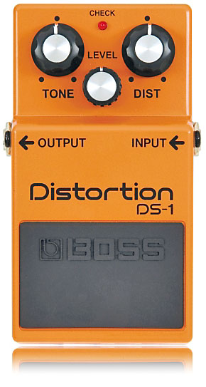
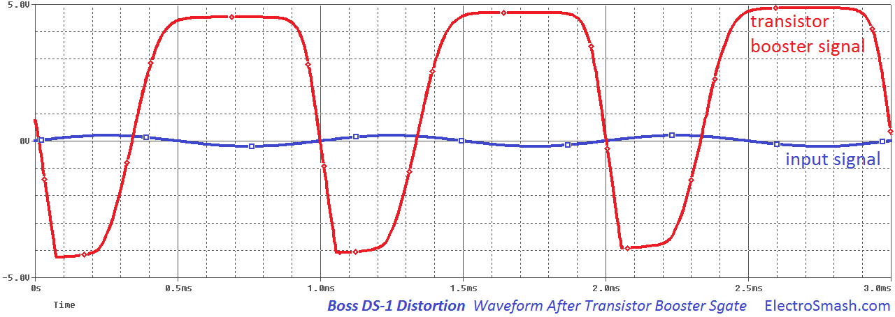
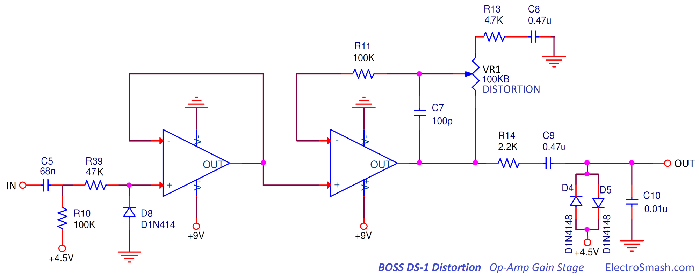

The Boss DS-1 is a distortion guitar pedal released in 1978 by Boss. It was the first distortion pedal made by Boss with a distinctive hard-clipping sound perfect for high gain rock and metal still keeping the character of the original guitar. The Boss DS-1 together with the TubeScreamer and the ProCo Rat cover almost all the spectrum of tastes for vintage classic rock/hard rock guitar distortion.

Table of Contents:
1- Boss DS-1 Circuit Versions.
2. Schematic.
2.1 JFET Bypass Switching / True Bypass.
2.2 Part List / Bill of Materials.
2.3 Circuit Layout.
3. Power Supply Stage.
4. Input Stage.
4.1 Input Impedance Calculation.
4.2 Input Stage Frequency Response.
5. Transistor Booster Stage.
5.1 Transistor Booster Frequency Response.
6. Op-Amp Gain Stage.
6.1 Voltage Gain Calculation.
6.2 Op-Amp Gain Frequency Response.
6.3 The effect of the C10 Capacitor.
7. Tone / Level Stage.
7.1 Tone/Level Frequency Response.
8. Output Buffer.
9. Boss DS-1 Distortion Sound Signature.
10. Resources.
1- Boss DS-1 Circuit Versions
During its life, the Boss DS-1 Distortion has had two schematic revisions due to components availability:
a. 1978 Original First Release using the Toshiba TA7136AP pre-amplifier (it is not an op-amp) with the circuit labeled as “DS-1”. Made in Japan, with a distinguishable silver screw.
In terms of sound, it gives the warmest distortion, offering glints of grittiness and smoothness at the same time. This first model had some inconveniences like momentary LED and the need for an external power supply. As usual, this model is the most expensive/difficult to find and it is claimed to produce the best sound.
b. 1994 Second Release using the Rohm BA728N op-amp (Made in Japan). The previous TA7136AP integrated circuit was at the end of its stock life, so the whole circuit design was modified (re-labeled as “DS1-A”) to accommodate a standard easy to find and replace dual op-amp.
This model is not very loud with a transparent drive. It is versatile; almost clean at lower gain setting with a serious edge at high gain (slight hiss is noticeable at higher gain settings). From now on, all the models are commonly called post '94.
c. 2000 Third Release using the Mitsubishi M5223AL op-amp (Made in Taiwan) and also using the previous “DS1-A” circuit diagram that will prevail until today. It is the loudest among all the models, at higher gain settings the distortion is fizzy (poorly made fuzz) with some noise. There are some popular mods to improve its tone making it thicker/stronger and more versatile (Tri-Gain / JHS / Keeley / Analogman)
d. 2006 Forth Release when the New Japan Radio NJM2904L op-amp was introduced with the usual DS1-A circuit. Cheap, easy to find and perfect for mods.
2. Boss DS1 Distortion Schematic.
The Boss DS1 circuit can be broken down into 5 big blocks: Input Stage, Transistor Booster, Op-Amp Gain Stage, Tone Control, Output Buffer and Power Supply.
The design idea is simple: The Input and Output Buffers will isolate the circuit, keeping the signal path clean and tone-sucking free. The transistor booster will pre-amplify the signal and all the distortion is produced using a variable op-amp gain circuit with diodes shorting the output to ground, producing hard clipping. This distortion stage is followed by a passive tone filter and level control. The Power Supply provides energy and bias points to all the circuit.
The circuit presented here is adapted to be used with a 3PDT switch, simplifying the circuit for DIY.
2.1 Boss DS-1 JFET Bypass Switching / True Bypass.
The original Boss DS-1 circuit has a JFET Bypass Switch Circuit to enable/disable the effect using a simple cheap momentary push button. The idea is simple: it can activate the effect routing the signal through the circuit or deactivate it, bypassing the pedal core BUT keeping the input and output buffers always in the signal path.
If you want to read more about the switching circuit operation, check the TubeScreamer pedal explanation, this part of the circuit is exactly the same: TubeScreamer JFET Switch Operation.
On the other hand, true bypass switches (3PDT) are considered to give a clean and transparent path for the bypassed signal. A 3PDT switch (Triple Pole Double Throw) will also allow you to light a power-on LED at the same time, which is pretty convenient. The 3PDT drives the guitar signal either through the effect circuitry, or straight input-to-output, the guitar signal does not even touch the input of the effect.
For mass production true bypass switches are difficult to mount and not cheap, some big pedal circuit manufacturers (like Boss) prefer to use complex but cheap JFET bypass circuits that also can carry other benefits like keeping always the input/output buffer in the signal chain (if desired).
2.2 Boss DS1 Part List / Bill of Materials (Tue Bypass).
C1,C3 47n
C2,C8,C9 0.47u
C4 250p
C5 68n
C7 100p
C10 0.01u
C11 0.022u
C12 0.1u
C13 0.047u
C14 1u
C15 47uF
C23 100uF
D1 1N4004
D4,D5,D8 D1N4148
Q1,Q2,Q3 2SC2240
R1,R22 1K
R2,R7 470K
R3,R8,R18,R21,R24,R25 10K
R4,R5,R10,R11,R23 100K
R9 22
R13 4.7K
R14,R15 2.2K
R16,R17 6.8K
R39 47K
R19,R20 1M
U1 NJM3404A ( or equivalent M5223AL, BA728N)
VR1,VR2 100KB
VR3 20KB
J1, J2 6.35mm Jacks.
2.3 Boss DS1 Circuit Layout
The circuit uses a single layer PCB with standard through-hole components which makes it easy and cheap to produce. All the potentiometers, jacks and battery are wired and hand soldered which is quite labor intensive.
note: Original Images from gitaradiy.pl and miqbal on diystompboxes.com
Boss DS-1 Operational Amplifier:
Although the circuit has been the same through the ages, the unusually SIL (Single in Line) packaged op-amp has changed several times:
- At the beginning (1978), the DS-1 was using the Toshiba TA7136AP opamp. This remained unchanged for about 16 years.
- In 1994 the op-amp was replaced by the Rohm BA728N.
- 6 year later, in 2000 the opamp was again changed by the Mitsubishi M5223AL
- The last change was in 2006 when the New Japan Radio NJM2904L opamp was introduced.
All these op-amp changes where due to manufacturing stock/part obsolescence.
3. Power Supply Stage.
The Power Supply Stage is a simple resistor divider that provides the power (+9V) and bias voltage (+4.5V) to the pedal:
- The resistor divider (R24, R25) generates +4.5 volts to be used as a virtual ground (bias voltage).
- The capacitors C23 (100uF) and C15 (47uF) are bulk capacitance that stabilizes the power supply lines.
- The diode D1 is protection against reverse polarity connections, in case the player connects a wrong power adapter.
- A stereo guitar input jack could be used as an on-off switch, connecting the battery (-) pin to ground when the guitar jack is plugged.
4. Input Stage.
The input buffer is a plain Emitter Follower (aka Common Collector) with unity gain and high input impedance that preserves signal quality eliminating tone sucking (high-frequency loss):
The Q1 part is a 2SC2240 Toshiba transistor, cheap low-noise/high-gain (β=200-700), nothing special here, it just does the job.
- The capacitor C1 isolates the guitar from any pedal dangerous DC level and filters the inaudible low-frequency signals with a cut frequency of 7.2Hz (fc=1/2πC1Zin)
- The R1 input series will protect the base of the transistor from surge currents (electrostatic discharges from the guitar jack tip).
- R2 is just a moderate high-value resistor that biases the base of the transistor to 4.5V.
- R3 is the emitter resistance, 10K is a pretty standard value for an Emitter Follower buffer.
4.1 Input Impedance Calculation.
In an Emitter Follower the input impedance can be calculated as β * Remitter , so the total impedance of the pedal is:
Zin= R1 +(R2//β*R3) = R2 = 470KΩ
note: the simplifaction of the formula (Zin= R2) is because the resistor R1 is too small compared to R2 (1KΩ<<470KΩ) and β*R3 is too big compared to R2 (200*10KΩ>>470KΩ), you can also make all the numbers and reach to the same conclusion.
If you want a further explanation of how to make all the numeric calculations, check the Tube Screamer Input Impedance Calculation; the circuit is very similar and all the maths are there.
470KΩ is a high input impedance to avoid loading guitar pickups and tone sucking, although the rule of thumb is to interface the guitar to an input impedance that is 1 MΩ minimum.
4.2 Input Stage Frequency Response.
The frequency response of this input buffer is dominated by the high pass filter created by C1 and R2 which has a cut frequency of 7.2Hz (fc=1/(2πRC)). Frequencies at 7.2Hz are attenuated -3dB with a roll-off or 6dB/oct. The aim of this stage is just to buffer the signal and remove the DC level
5. Transistor Booster Stage.
This stage applies some frequency filtering and signal boosting before the op-amp stage. The idea is to raise the signal levels so the next stage can work with acceptable levels although as we can see later, the signal is maybe too boosted after this stage.
The first part of this stage are 2 consecutive high pass filters:
- C2 and R4 with a cut frequency of 3.3Hz
- C3 and R5 with a cut frequency of 33Hz.
The basic idea behind this filters is to remove the excess of bass before the (next) distortion stage, a guitar signal with too much bass harmonics could make the distortion slow, dumped or muddy.
The transistor stage is a Common Emitter amplifier, the approx. voltage gain in this topology is collector resistance divided by the emitter resistance (RC/RE or R8/R9 = 10K/22 = 454 = 53dB), but the effect of the feedback resistor and capacitor (R7 and C4) will lower this gain to 35dB have to be taken into consideration.
The maths behind this topology so-called Shunt Feedback resistor are a bit complex and if you want to see the full numeric development check the Big Muff Pi Input Booster Stage, the topology is the same with some small values changes. In a nutshell, the original high gain (454) is reduced to a more sensible value of 56 (35dB) with better immunity to noise/temperature and oscillation.
However, a gain of 56 times is a huge amount of it, if we have a guitar input signal of 200mVpp, after the transistor booster the signal level is 11.2Vpp, the waveform will be distorted because the pedal supply is 9V. This gain will create a clipping that looking at the image below is asymmetric (cycles have a slightly different duration) and has a soft knee or soft clipping:

note: in the image above:
- Guitar input signal in blue color 200mVpp.
- Output signal after the Transistor Booster Stage in red color 9Vpp (clipped).
Q2 Transconductance:
5.1 Transistor Booster Frequency Response.
The response of the Transistor Booster stage has an attenuation of the low frequencies because of the 2 high pass filters discussed above, so the freqs below 33Hz are attenuated (6dB/oct) and reaching the bottom of the graph at 3.3Hz the signal has a -12dB/oct roll-off
The signal has a raw gain of 35dB (56 times bigger) on frequencies above 3.3KHz that makes this stage to boost the guitar signal to the (soft) clipping.
6. Op-Amp Gain Stage.
The Operational Amplifier block is the heart of the circuit, it is build using a variable non inverting op-amp amplifier with two diodes to do the clip/distortion action and some passive RC filters ( passband = low pass + high pass) to set the clipping and the frequency at which it occurs. 
At the beginning of the stage, there is an RC network (C5-R10) that creates a high pass filter with a cut frequency of 23Hz (fc=1/2πRC). This is not an intentional filter, just a cap is needed to couple the previous transistor gain stage and a moderate-high value resistor is needed to bias the + pin of the op-amp at virtual ground (+4.5V).
- R10 is a high-value resistor that biases the input of the op-amp to 4.5V.
- The diode D8 is placed to protect the op-amp input. At the op-amp input, signals will float around 4.5V biased by R10, and in case that signal coming from the previous stage tries to drive the op-amp input below the negative rail, the diode will clip at -0.7V (-VF) not allowing dangerous voltages to be present at the + pin.
Q2's collector is biased around +5.8V, and when going into saturation, without D8, U1 pin 3 would be driven to -1.3V. When an op-amp input is driven beyond the rails, bad things happen. Some opamps are damaged, some will latch-up, most take time for the input stage to recover from being over-driven, and that screws up the sound.
It is important to mention that by the time this diode is conducting, the opamp is already clipping. Therefore D8 has nothing to do with asymmetrical clipping or any kind of guitar signal modification.
- R39 will protect the input of the op-amp keeping the current limited on the + pin.
note: If you are using the Mitsubishi M5223AL op-amp you will need a 1K pull-up resistor from the second op-amp output to +9V. This resistor is labeled as R40 and will force the op-amp to work into class-A reducing distortion. Read the last page of the M5223A datasheet for more information.
The first half of the NJM2904L dual op-amp is a simple buffer, it won't add (or remove) anything to the guitar signal. It buffers interfaces the previous Transistor Booster stage with the second half of the op-amp that will do all the magic.
6.1 Voltage Gain Calculation.
The second half of the NJM2904L is a non-inverting amplifier that will boost the signal up to 22.3 times (26.5 dBs) following the formula:
Gvop-amp max = 1 + ( VR1)/( R13) = 1 +(100K/4.7K) = 22.3 (26.5dB)
Gvop-amp min = 1 + ( 0Ω )/( R13 ) = 1+(0K/4.7K) = 1 (0dB)
The clipping stage defines the distortion signature sound, it is built using 2 back to back diodes that shunt the signal to AC ground (4.5V), this kind of clipping technique gives a “hard-clipping” sound also used in the MXR Micro-amp or the RAT opposed to the “soft-clipping” style created by placing the diodes on the feedback loop of the op-amp and used in other pedals like the Tube-Screamer.
With the 26.5 dB of gain, the audio signal will be bigger than the VF of the diode (1S1588 or 1S2473 or equivalent 1N4148) that is around 0.7V in any position, creating a hard clipping action:
The image above shows the waveform after the clipping diodes, it exhibits a clear squared shape limited between +0.7V and -0.7V which is the VF of the diodes. Playing with the distortion potentiometer the edge of the waveform can be softened by in any case the overall look is pretty squared and distorted.
- Capacitor C7 (100pF) reduces the high harsh harmonics at the very top of the audio spectrum. It controls it by allowing highs through the feedback loop.
- The high-pass filter created by C8 and R13 (and part of the VR1 pot depending on its position) will remove freqs below 72Hz (or lower depending on the VR1 position)
fcmax = 1/(2πC8R13) = 1/(2*3.14*0.47u*4.7K) = 72Hz
fcmin = 1/(2πC8(R13+VR1)) = 1/(2*3.14*0.47u*104.7K) = 3Hz
At max distortion, harmonics over 72Hz get the full gain of the distortion stage, and everything below it gets progressively less gain and distortion. Bass notes are less clipped, so the distortion is frequency selective (similar to what happens in the Tube Screamer, but in that case, the freq limit is 720 instead of 72Hz).
- As mentioned above, the diodes D4 and D5 will clip when the amplified signal goes over/below the forward voltage (VF) which is around 0.7V.
6.2 Op-Amp Gain Frequency Response.
The frequency response of the Op-Amp Gain stage is set in the low frequencies by the high-pass filter formed by C8 & R13 (fc=72Hz). Also, C5 & R10 reduce harmonics below 23Hz at the limit of the audio spectrum that will help either way to reduce oscillation.
On the high frequencies by the low-pass filter formed by R14 and C10 will attenuate harmonics over 7.2Khz, this is better explained in the section below. The cap C7 will also reduce harmonics at very high frequencies, softening a bit the distortion and reducing oscillation problems.
The minimum gain is 0dB and can go up to 26.5dB depending on the position of the distortion potentiometer, this amount of gain is not massive (the Tube Screamer has 41dB, the Proco Rat has 67dB) but the fact that the previous stage has a gain of 35dB makes that the resulting signal is completely clipped.
6.3 The effect of the C10 Capacitor.
There is an obvious RC network (R14 & C10) with C10 in parallel with D4 and D5 clipping devices. The D4 & D5 diodes load the R14 - C10 network and drastically alter the cutoff freq. When either D4 or D5 are conducting, the impedance at R14 - C10 junction is greatly reduced. This is a non-linear circuit, the best way to analyze the behavior is in the time-domain, as is shown in the figure in 6.1. section.
The image below is only applicable to the case where the signal is so small (below clipping) that the diodes don't conduct, where the resistor R14 and C10 form a low pass filter with fc=7.2KHz that will mellow the signal, but most of the time D4 or D5 are conducting...
Generally speaking, the C10 cap makes the distortion less grainy, making a rounder-pleasant distortion.
7. Tone / Level Stage.
The Boss DS-1 uses a passive Big Muff Pi style tone control, which scoops the mids and attenuates the lows or highs, depending on which way you turn the knob. The circuit consists of a simple fixed -6dB/oct low pass filter (formed by R16 and C12 with an fc=234Hz) and a fixed -6dB/oct high pass filter (formed by C11 and R17 with an fc=1063Hz) using the VR3 pot to mix the two signals. The cut-off points of both filters are calculated so that their interweaving effect create a frequency scoop/notch around 500Hz when the tone control is set to the middle position.
- After the initial tone shaping carried out by the first part of the circuit and the VR3, the VR2 pot regulates the level by bleeding part of the signal to AC ground.
7.1 Tone/Level Frequency Response.
The frequency response of the Tone control looks similar to the Big Muff Pi, the Boss DS-1 has a scoop around 500Hz. This equalization enhance the bass and treble of the signal and is used in hard rock, other pedals like the Tube Screamer have a completely different approach boosting the mids creating a mid-hump.
There is an overall -12dB (4 times) loss and at the notch the loss is about -20db (500Hz) but there is no problem with this because in the previous stage after the diode clipping the signal has a 1.4Vpp amplitude, with -12dB loss the resulting signal will be 350mVpp (1.4Vpp/4times) which is fine for an output level and won't distort the input stage of the next pedal on the chain or the guitar amplifier.
8. Output Buffer.
The output buffer has exactly the same circuit as the input buffer, its task is to keep a low output impedance for better signal integrity in the guitar-pedals-amp chain. Like the Input Stage, this unity gain buffer is implemented with a plain Emitter Follower with a 10K emitter resistor R21, biased from the 4.5V source with R19 in parallel with R20 (1M//1M=500K).
- The input capacitor C13 and R20 create a high pass filter with fc=3.4Hz (fc=1/2piRC), the idea is just to remove the DC levels so the transistor can be correctly biased.
- The 2SC2240 is a cheap high-gain transistor, a simple unity gain buffer does not have high requirements for the transistor.
- R21 is the emitter resistance, 10K is a standard value for an Emitter Follower buffer.
- C14 and R23 form a high pass filter with an fc=1.6Hz below the audio spectrum. The purpose of this filter is just to remove the DC levels from the final output signal.
9. Boss DS-1 Distortion Sound Signature.
The sound footprint of the current Boss DS-1 Distortion could be defined by its exaggerated amount of gain, the hard clipping of the grounded diodes and the freq response shaped by different filters through the whole pedal. These are the key elements:
- In the Op Amp Clipping Stage, the diodes (D4 & D5) are back to back connected to AC ground (+4.5V), so the clip is harder and as a hard knee giving a strong character.
- In the Transistor Booster Stage, the Q2 asymmetric clipping gives rise to even-order harmonics which are more sonically pleasing. Modders will unbalance the D4-D5 network to make their clipping even more asymmetric.
- The Tone-Level stage with a mid-scoop is used in fuzz pedals (Big Muff Pi) and some Marshall amps being popular among hard-rock/metal players. Other pedals like the Tube screamer have a complete opposite freq response (mid boost), so this characteristic is a great part of the pedal personality
- The Transistor Boosting Stage has a huge amount of gain, it amplifies the incoming signal 56 times (35dB). This transistor overdrives the signal from the early stages of the pedal and will condition the behavior of the whole effect. This is the reason why a lot of mods like the 'Vintage Ripper', the 'Fat Mod for DS-1' or the 'Huevos Grandes' increase the size of R9 from 22Ω to 1KΩ, this makes the voltage gain of the Transistor Booster Stage to decrease from the default 35dB(56 times) to a more moderate value of 17dB (7 times).
In consequence, by replacing R9 for a 1K resistor, the signal gets boosted just 7 times (17dB), so any typical guitar input signal of 100mVpp after the transistor booster stage has a level of 100mVpp x 7 = 0.7Vpp a low level that will not clip the op-amp stage. This makes the user have a higher grade of control and variation; from a simple boosting to hard clipping.
In the image above you can see the difference between using an R9 of 22Ω (default) or using the 1KΩ resistor. Using the 1K value the amount of the clipping control is wider.
A bigger R9 applies negative feedback through the Q2 emitter and lowers the collector current. The emitter feedback reduces the distortion. Both the emitter feedback and the lower collector current decrease Q2's voltage gain, which lessens the effect of the negative feedback through R7 and C4. By lessening the effect of R7 and C4, the low-freq cutoff from C3 is moved down and the high-freq cutoff from C4 is moved up. I think this is why people say that increasing R9 "flattens the frequency response".
This all-time classic Boss DS1 design has a lot of subtle things going under the radar that even the original designers do not fully grasp, in my opinion, the Klon Centaur is the pinnacle of this factor. In most cases, the electronic design of a good sounding pedal is a mix of luck, engineering, and black magic.
10. Resources.
Boss DS-1 Mods by PremerGuitar.
Build your Own DS-1 Distortion.
Marshall JCM & Octave Fuzz Mods by pedalheaven.
Boss DS-1 A Detailed Take by GoodSpeed64.
OpAmp Filter Examples by University Las Vegas Nevada.
My sincere appreciation to Dave Harvey, Romeo G. Cesar, G. Brandt, K. Carpenter and D. Knapp for your support writing this article.
Thanks for reading, all feedback is appreciated This email address is being protected from spambots. You need JavaScript enabled to view it.


{kind=link}
{kind=link}
{kind=link}
{kind=link}
{kind=link}
{kind=link}
{kind=link}
{kind=link}
{kind=link}
{kind=link}
{kind=link}
{kind=link}
{kind=link}
{kind=link}
{kind=link}
{kind=link}
{kind=link}
{kind=link}
{kind=link}
{kind=link}